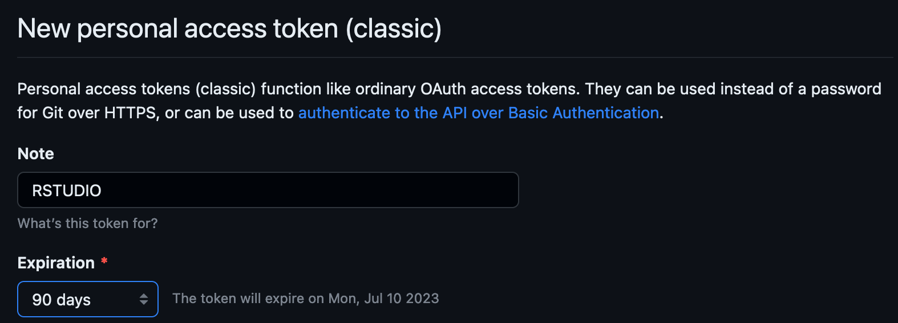

- Generate a new token by calling
usethis::create_github_token()from your R console (e.g., in RStudio). This launches GitHub in your browser. Sign in if necessary. - You should be at the “New personal access token” page. Change the Note to “RSTUDIO” or something similar. I like to set the Expiration to 90 days. Don’t change any of the check boxes. Scroll to the bottom and click the green “Generate token” button.
- If you get an error saying “Note has already been taken”, call your token something else, like RSTUDIO2.
- You should now see your list of tokens. The top one should be highlighted in green and look like a long string of random characters. Copy the whole thing using the copy icon just to the right of it.
- If you encountered the error in step 2, use this opportunity to delete your expired “RSTUDIO” token.
- Back to RStudio. Again at the console, call
gitcreds::gitcreds_set(). Notice you don’t give the function call any arguments, just hit enter.

- You should see a prompt asking what to do with your current credentials. Choose “Replace these credentials”.
- Paste your token at the “Enter new password or token” prompt and hit enter.
That should do it!